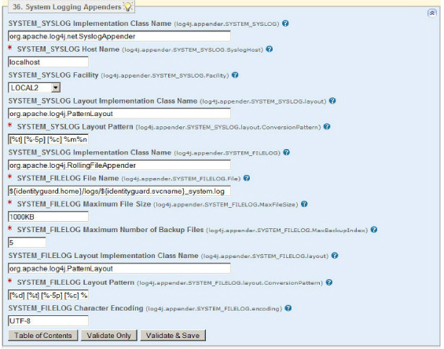

|
IdentityGuard Server 11.0 Administration Guide |
|
IdentityGuard Server 11.0 Administration Guide |
For system messages, Entrust IdentityGuard supports an appender for the Syslog protocol (SYSTEM_SYSLOG) and a rolling file appender (SYSTEM_FILELOG).
The Properties Editor provides standard defaults that should work in most environments. Several properties cannot be modified or should not be modified under normal circumstances:
● The SYSTEM_SYSLOG Implementation Class Name property defines the log4j appender to use for system logs. Changing the default may disable audit logging.
● The SYSTEM_SYSLOG Layout Implementation Class Name and SYSTEM_FILELOG Layout Implementation Class Name properties set the log4j class that converts a logging event into a message string to be printed in the logs. Do not change them. If you do, you may not get readable log files.
● The SYSTEM_FILELOG Implementation Class Name property defines the appender used if audit events are logged to files. Changing the default may disable audit logging.
To change system logging properties
1. Start the Entrust IdentityGuard Properties Editor. (See Logging in and out of the Properties Editor.)
2. On the Table of Contents, click System Logging Appenders.
3. To change audit properties when you are using Syslog for your logs, update the following properties as required:
a. Set the SYSTEM_SYSLOG Host Name property to change the default Syslog host that logging information is sent to. You can specify a host name or IP address. Append a colon and nondefault port number to the host, if required.
b. Set the SYSTEM_SYSLOG Facility property to define the Syslog facility used for system logs. Select the option from the drop-down list that best describes what facility on the system originated the message. The default is Local2.
c. Set the SYSTEM_SYSLOG Layout Pattern property if you need to change the format of the converted logging event. Please see the log4j documentation for further information.

4. To change audit properties when you are using the rolling file appender for your logs, update the following properties as required:
d. Set the SYSTEM_FILELOG File Name property if you need to change the location of the system log.
e. Set the SYSTEM_FILELOG Maximum File Size property to change the maximum size in kilobytes that a log file can reach before it rolls over to a new empty file. The default is 1000 KB.
f. Set the SYSTEM_FILELOG Maximum Number of Backup Files property to set the number of previous log files to keep as a history. The default is 10.
g. Set the SYSTEM_FILELOG Layout Pattern property if you need to change the format of the converted logging event. Please see the log4j documentation for further information.
h. Set the SYSTEM_FILELOG Character Encoding property to specify the character encoding used when writing logging events to the log file. If you do not specify a value for this property, logging events are written with the system's default character encoding, UTF-8.
5. Click Validate & Save.